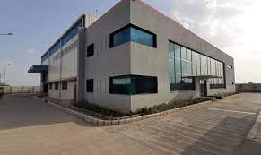
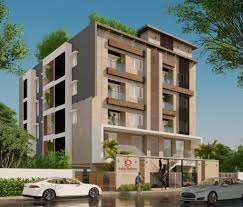
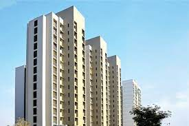
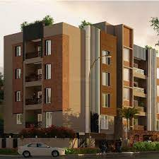
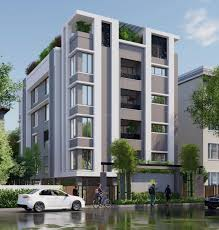

Elite’s philosophy is to deliver the best beyond expectation and one among the leading construction companies with a focus on quality, timely delivery, and safety. Have executed many prestigious projects across south India which include software development parks, commercial, residential, institutional industrial and infrastructure. Within a short span of time Elite Engineering & Construction have gained the confidence of clients and have grown multi-folds with a proven track record of completing projects within the scheduled time and client’s expectations. Elite’s major strength is commitment to the timely completion of project with due emphasis on project management, quality and safety. We at Elite want to be one of best among the industry. S V GURUSAMY Managing Director AT ELITE ENGINEERING & CONSTRUCTION The Genesis of Elite Engineering & Construction was conceived in the passionate dream to construct value standing on the strong foundation of quality, transparency and commitment. Elite’s commitment to quality and passion towards perfection has helped to carve a niche in the engineering and construction realm. Elite group’s meticulous planning prior to the start of construction provides the foundation on which every subsequent step is based, fewer construction-phase changes, reduced construction time thus cost savings. VISION To rise to the top in Civil Engineering and Construction Industry. MISSION EEC aspires to attain an enviable position in the industry by Placing a premium on people and constantly honing their skills while inspiring them to achieve new heights Developing systems and processes by which quality and timelines become automatic outcomes Fostering a culture of peace and harmony amongst all stakeholders and the society around it.
    Elite Mep
info@elitegroup.in
+91 44 2233 1186/89
© 2023SAI